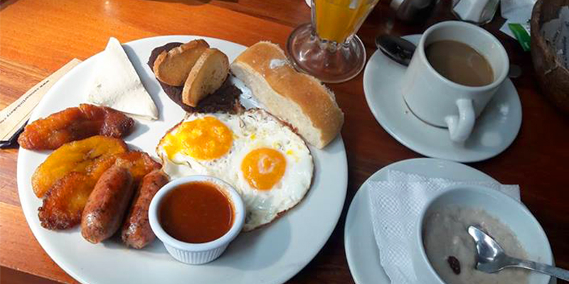
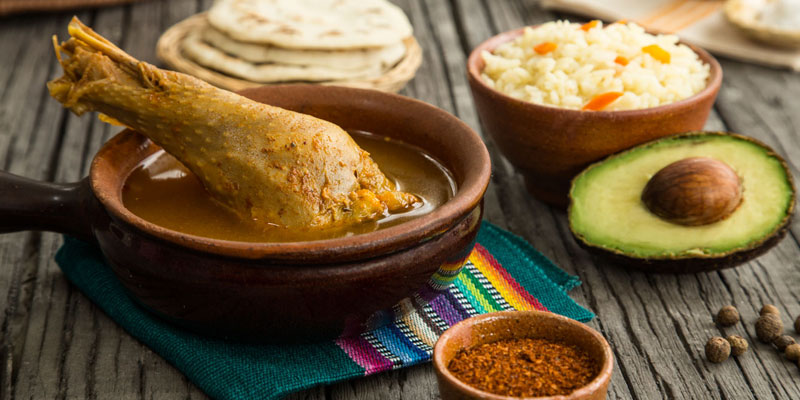

Desayuno Chapín
04/07/2019
El desayuno típico chapín es parte de los deliciosos platillos de Guatemala. Posee variados ingredientes dependiendo del lugar donde se prepare. Aunque nunca pueden faltar los frijoles, huevos, plátanos fritos, acompañados por un exquisito café guatemalteco. La presentación del platillo es distinta en varios lugares. Sin embargo, ese único sabor chapín es el mismo. Te compartimos una sencilla receta para que puedas prepararlo ¡Buen provecho!

Kak'ik
04/01/2019
El Kak’ik o Kaq’ik guatemalteco es un plato típico de Alta Verapaz. Según las tradiciones, es una receta que debe ser acompaña por el tamalito blanco envuelto en hoja de plátano. El Kak’ik es conocido como caldo colorado de pavo o chunto, tradicional de Cobán. Al igual que el pepián y el jocón, fue declarado Patrimonio Cultural Intangible por el Ministerio de Cultura y Deportes, según Acuerdo Ministerial 801-2007.